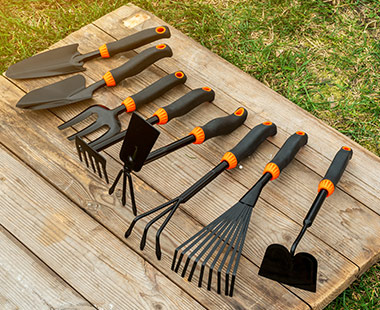

Dlaczego wiosenne porządki są tak ważne?
Wiosna to idealny czas na odświeżenie domu i ogrodu. Regularne porządki pomagają zadbać o higienę, komfort i estetykę przestrzeni.
Sprzątanie ogrodu – jak zacząć?
Przygotowanie narzędzi ogrodowych
Ważne jest, aby mieć odpowiednie narzędzia ogrodowe, które ułatwią pracę.
Usuwanie liści i gałęzi
Pierwszym krokiem jest usunięcie zalegających liści i suchych gałęzi.
Czyszczenie mebli ogrodowych
Po zimie warto dokładnie umyć i zabezpieczyć meble ogrodowe.
Jakie narzędzia ogrodowe są niezbędne?
Podstawowe narzędzia ręczne
Do podstawowych narzędzi należą grabie, sekator i motyka.
Sprzęt elektryczny i spalinowy
Kosiarka i dmuchawa do liści mogą znacząco przyspieszyć prace ogrodowe.
Wiosenne porządki w domu – krok po kroku
Organizacja przestrzeni
Najlepiej rozpocząć od selekcji niepotrzebnych przedmiotów.
Ekologiczne środki czystości
Domowe środki, takie jak ocet czy soda oczyszczona, są skuteczne i bezpieczne.
Galeria
